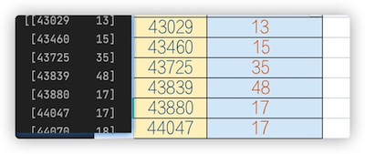
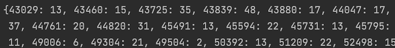

Python之txt、excel操作
这篇文章主要是记录在做第一次项目中所用到的re库和pandas库读txt、excel文件的操作代码记录，不仅为了记录学习足迹，也为了以后用方便copy。
re库的操作
主要是re.sub()的使用
re.sub：获取字符串固定位置上的数字
1 | text = '/Contour Image 6 Sequence 1 item' |
txt文本读写
open：读取txt文件
1 | dir = 'loss.txt' |
注意：使用open()最后要close(),而像下面这种使用with open() 本身就自带close(),所以不用写close().
write：在txt文件写入内容
1 | loss = 'i , 2 , 6 . 9' |
注意：写入的内容必须是字符串格式
truncate：清空txt文件内容
1 | with open(r'loss.txt', 'a+', encoding='utf-8') as test: |
eval：将字符串转换为对应的列表、字典、元祖
1 | t = "{1:'a', 2:'b', 3:'d'}" |
注意：只适用于存储形式就是对应的列表、字典、元祖
其与str()函数作用正好相反
pandas库的操作
excel的读取
1 | import pandas as pd |

转换读取的数据
1 | df = pd.read_excel(root) |
